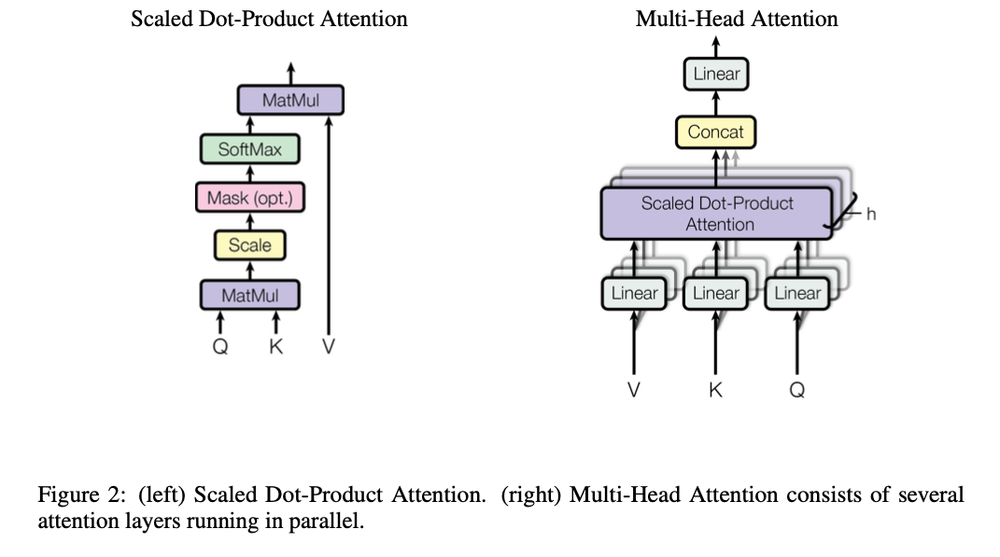

The Attention mechanism like all other critical model breakthroughs exploits underlying structure in the data. NLP is not a random mixture of word, and therefore a mechanism that can more easily represent the data will be able to perform more powerful functionality.
The attention function is a map between an query and a set of key-value pairs to an output. The output is a weighted sum of the values, where the weight is computed by a compatibility function of the query with the corresponding key.

The paper uses Multi-Head Attention which is composed of the Scaled Dot-Product Attention mechanism:
Scaled Dot-Product Attention
The left of figure 2 shows the inputs of the Scaled Dot-Product Attention mechanism with a Query and Key-Value pairs, denoted by their respective letters. The output is computed as:
The two most often used attention functions are additive or dot-product attention. The transformer uses the multiplicative attention with the only difference being a scaling factor of . In practice, all attention computations are executed on a matrix of multiple attentions stacked into a single unit.
Multi-Head Attention
This paper found instead of using a single attention function a model wide, uses a variety of projected dimensions. With this, they can perform operations on all attention heads in parallel, yielding -dimensional output values to be concatenated and once again projected to final resulting values. This is shown on the right of fig2. In this work, they used 8 parallel attention heads. With the dimension of each head is the model dimension divided down to .
Additional notes:
Position-wise Feed-Forward Networks: Each encoder or decoder output is equipped with a very simple feed forward network with ReLU activation between two linear layers.
Embeddings: Similar to transduction models, the Transformer uses learned embeddings to convert the tokens to a dimensional vector space.
Positional Encoding: In order to compensate the lack of embedded position information inherent in RNNs, they added ‘positional encodings’ to the input embeddings at the bottom of the encoder and decoder stacks.